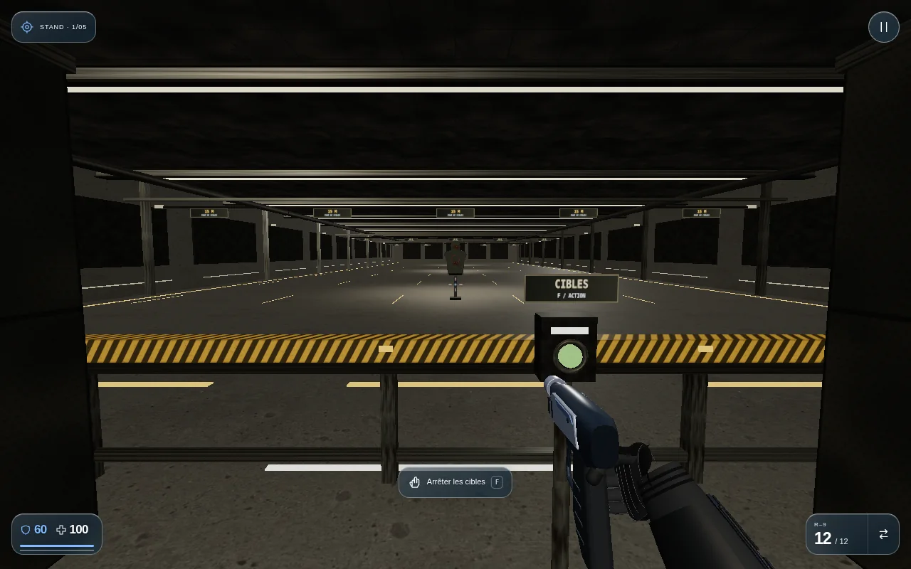
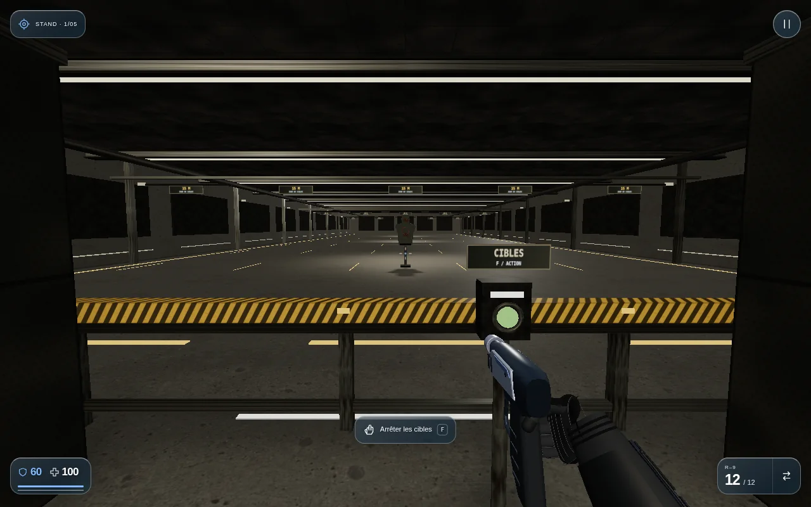
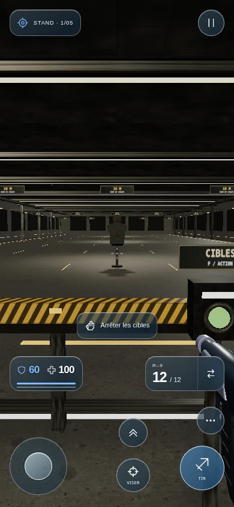

Des ombres liées aux plafonniers.
Les cibles, cloisons, garde-corps, tables et boîtiers projettent leurs ombres dans le stand. Les contacts au sol restent lisibles pendant le déplacement et le basculement des cibles.
Jouer · choisir Stand de tir →


Éclairage seulOmbres activées
Format iPhone

Cartes compactes et calcul conservé pour les travées vides. Captures navigateur ; essai matériel dans le casque à effectuer.